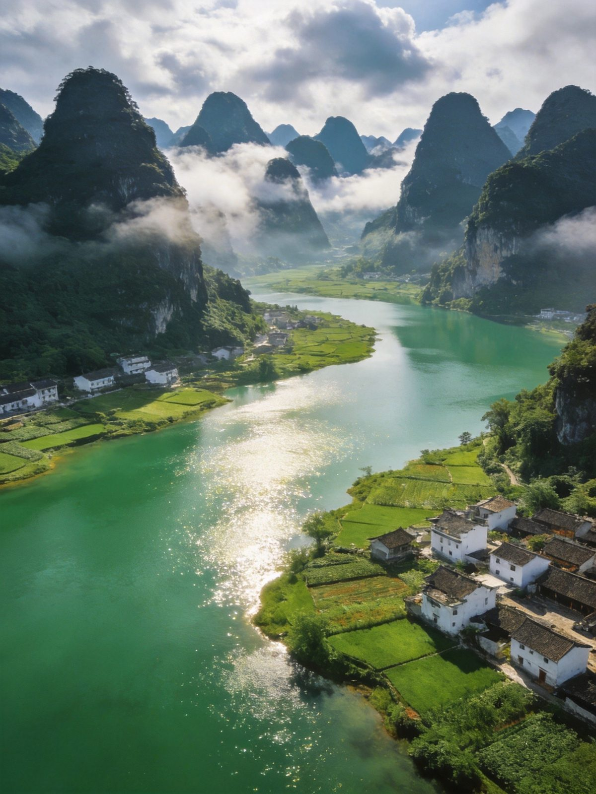
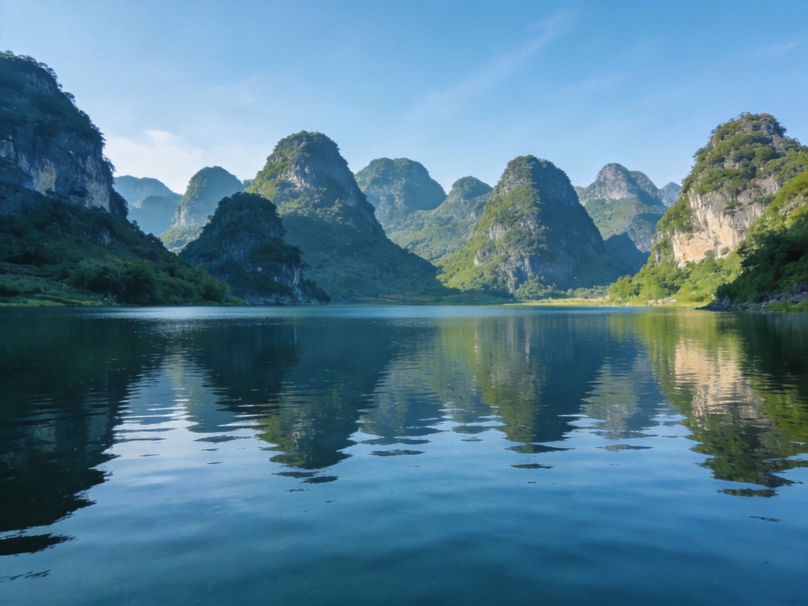
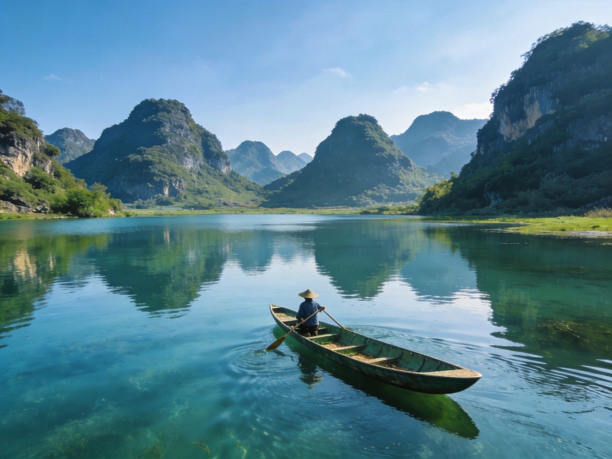
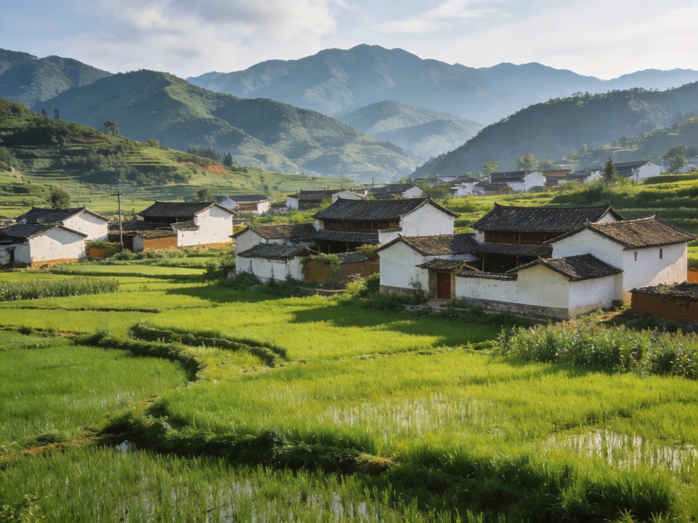

封面
总览
行前准备
Day1 荷塘
Day2 游湖
Day3 田园归
美食清单
组合·贴士
安全提示

PUZHE · 普者黑
峰林 · 水乡
普者黑 · 荷塘 · 田园
喀斯特峰林
夏季荷塘
柳叶舟
彝族村寨
田园
2–3 天 · A5 手册 · 摄影/亲子/慢度假
1
/ 9
普者黑
动线总览
3 天怎么玩
Route Overview
Day 1
荷塘
荷塘 · 峰林漫步
千亩荷塘 → 峰林田园 → 水乡步道
Day 2
游湖
柳叶舟游湖
乘柳叶舟穿梭湖中 → 峰林倒影 → 湖上清风
Day 3
田园
彝族村寨 · 返程
村里慢逛 → 田园午餐 → 返程
TIP
夏季（6-8月）荷塘最美
；两天可砍村寨，专注荷塘+游湖两大主角。
TIP
🎫 柳叶舟游湖约 100+ 元/人（以现场为准），荷塘区免费步道为主。
2
/ 9
普者黑
行前准备
出发前，记住这 3 点
Before You Go
🏨 住哪最顺
普者黑景区内/村寨民宿
：推窗见山水，
首推
丘北县城
：吃住选择多，性价比高
荷塘季记得提前订房
🚄 怎么走
高铁
：昆明—普者黑站约 1 小时，站到景区约半小时车程
景区内
步道+柳叶舟
最舒服，村镇间可走路或坐电瓶车
自驾进景区看停车与限行规定
🎒 必带
防晒、墨镜、遮阳帽、舒适鞋、晴雨伞
夏季荷花季备好驱蚊、防水袋
普者黑 · 荷塘
3
/ 9
普者黑
Day 1 · 荷塘
Day 1 · 荷塘
荷塘 · 峰林漫步
千亩荷塘
→
峰林田园
→
水乡步道
🌸 千亩荷塘
夏季荷花盛开，粉色花海无边，美得不像话
沿栈道漫步，荷香沁人、拍照绝佳
🏔 峰林田园
喀斯特峰林环抱村落与稻田，如山水画
青色峰林与水乡倒影，随手都是大片
TIP
荷塘
早晨光线与温度最舒服
，花带露珠更好拍；防晒戴上，夏季正午热。

峰林 · 水天一色
4
/ 9
普者黑
Day 2 · 游湖
Day 2 · 游湖
柳叶舟游湖
乘柳叶舟
→
湖中峰林
→
湖上清风
🛶 柳叶舟
乘小船穿行湖中，水面平静如镜
两岸峰林倒影、水禽相伴，惬意放松
💦 水乡慢行
下船后沿湖步道走走，村落与田园错落
把水乡的悠闲装进行程里，慢慢感受
TIP
游湖
选晴好时段
水面倒影最美；湖上注意防晒，保管好手机相机防水。

柳叶舟 · 游湖
5
/ 9
普者黑
Day 3 · 田园
Day 3 · 田园
彝族村寨 · 返程
村寨慢逛
→
田园午餐
→
返程
🏘 彝族村寨
青瓦白墙的村落，民族风情与田园气息交融
走走巷子、看看当地人生活，烟火气十足
🍲 田园味
农家菜、现摘果蔬，新鲜质朴
逛完村子饱餐一顿，心旷神怡地返程
TIP
返程
留足去高铁站时间
；时间够可多留一晚看晨雾水乡，超治愈。

村寨 · 田园
荷塘 · 影
6
/ 9
普者黑
美食清单
普者黑的味道
Eats
🍲
彝家菜
彝家腊肉、坨坨肉 —— 民族风味
🪷
荷花季美食
荷叶鸡、藕、莲子 —— 应季鲜美
🍚
农家饭
稻花鱼、农家土鸡、蒸饭 —— 质朴
🥬
时蔬野菜
现摘蔬菜、野菜 —— 新鲜清爽
🍜
米线
云南米线、凉卷粉 —— 地道
🍯
特产
丘北辣椒、三七 —— 伴手礼
TIP
荷塘季
趁夜尝藕与荷叶鸡
；农家菜分量足，按人头点菜别浪费。
7
/ 9
普者黑
组合 · 贴士
怎么串着玩
Combine & Tips
📷
摄影
早晚光线最佳，荷塘日出、峰林倒影都出片
👨👩👧
亲子
游湖+荷塘步道轻松，孩子玩水看荷都开心
🌸
最佳季节
6-8月荷花季最美；春季田园葱茏、秋稻金黄
🚶
节奏
水乡适合松弛慢玩，别贪多，留充足放空时间
🔗
连玩
近
文山/广南
，可与周边喀斯特山水串联
TIP
普者黑"山水荷塘慢生活"，
别赶行程
，在一幅流动的山水画里慢慢走最值得。
8
/ 9
普者黑
安全提示
看清这些，玩得更安心
Stay Safe
🛶
游船安全
穿好救生衣，湖上不嬉闹，保管好随身物品
☀️
防晒
高原日晒强，定时补凃防晒、多喝水，避免暴晒
🦟
防蚊
水乡蚊虫多，备驱蚊液、长袖，防叮咬
💧
水上照护
带小孩岸边活动勿靠近深水区
⛈
天气
雨季留意预报，雷雨时勿在开阔水边逗留
⚠️
紧急
紧急拨 110 / 120 / 119；景区游客中心可求助
山水荷塘「WorldStip」祝你玩得尽兴 🪷
9
/ 9
普者黑 · 喀斯特水乡 2-3 日手册 · 由 WorldStip 定制
Insta360
记录美好
记录美好生活
相机指南 · CAMERA GUIDE